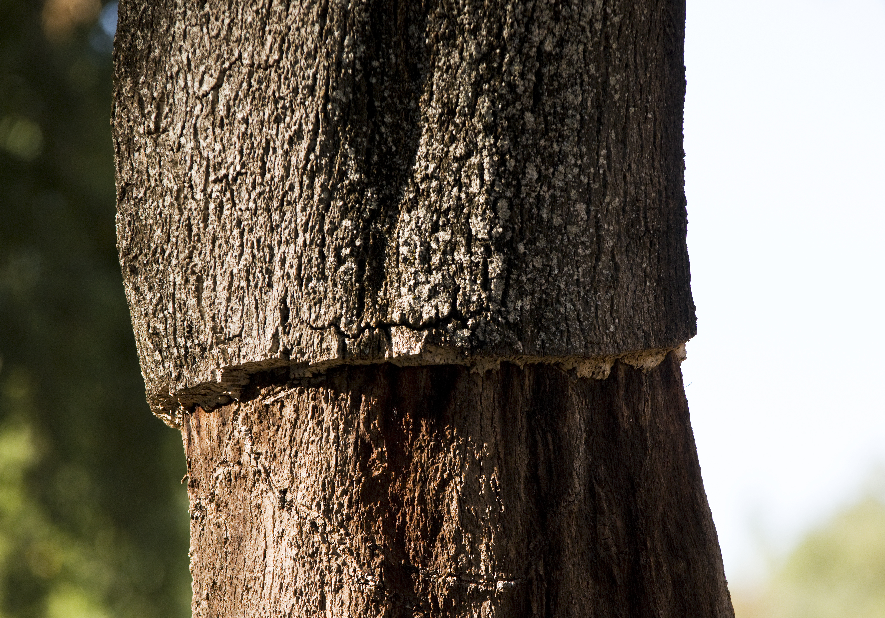
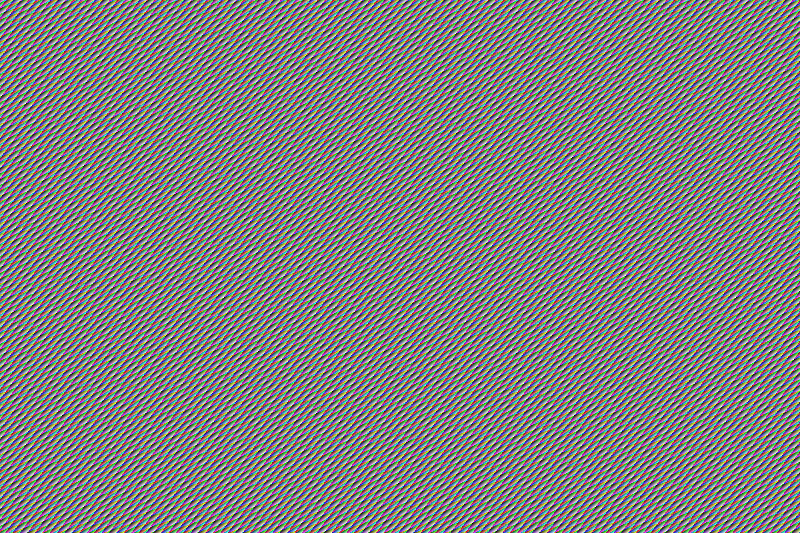
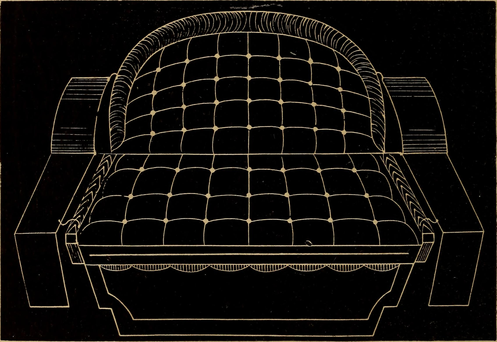
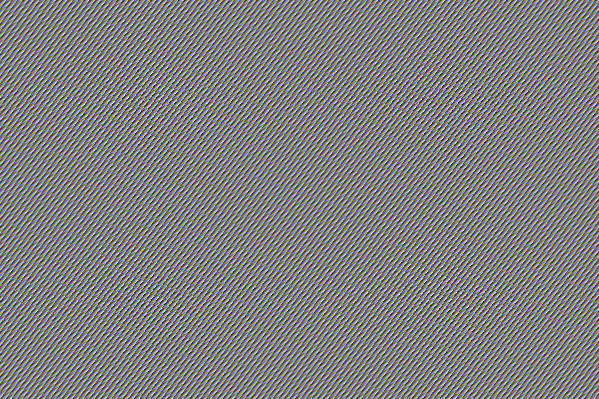

The Noble Architecture of Natural Suberin Leather
Cork Pochette elevates the ancient, renewable bark of Mediterranean cork oaks (Quercus suber) into exceptional evening bags. Hand saddle-stitched with waxed French linen thread and mounted with solid forged brass hardware, each bespoke pochette embodies tactile luxury and timeless structural poise.

Master Maroquinerie Disciplines
Every pochette is conceived and constructed following the historic hand-bench rituals of Parisian luxury leathercraft.

French Hand Saddle-Stitching
Two needles passing through each hand-pricked awl hole with beeswax-coated linen thread create an interlocking seam that never unravels, outlasting machine lock-stitching by decades.
Explore Saddle Technique →
Noble Quercus Suber Textile
Harvested without harming the living cork tree, raw bark planks undergo eighteen months of outdoor seasoning before being shaved into micro-thin veneers bonded to organic cotton canvas.
Discover the Material →
Forged Antiqued Brass Hardware
Solid brass turnlocks, D-rings, and magnetic clasps precision-milled and hand-finished with a soft antique satin luster, providing satisfying tactile weight and permanence.
View Hardware Finishes →Commission Telemetry Calculator
Configure model dimensions, grain texture, thread tone, and metallic appointments to preview crafting duration and finished bag weight.
Suberin Cork vs Traditional Maroquinerie Leathers
Empirical laboratory testing demonstrates how natural suberin outperforms animal hides and synthetic polymers in weight, water resistance, and longevity.
| Material Matrix | Specific Density | Water Absorption (24h) | Tensile Shear Strength | Thermal Conductivity | Environmental Life Cycle |
|---|---|---|---|---|---|
| Quercus Suber Cork Veneer | 0.16 g/cm³ | < 1.2% (Suberin Barrier) | 18.4 MPa | 0.045 W/m·K (Thermal Insulator) | 100% Renewable (Tree Survives) |
| Calfskin Box Leather | 0.88 g/cm³ | 16.5% (Pores Absorb Moisture) | 22.0 MPa | 0.140 W/m·K | Chrome-Tanned Animal Agriculture |
| Vegetable-Tanned Cowhide | 0.94 g/cm³ | 19.8% (Stains Without Sealant) | 24.5 MPa | 0.165 W/m·K | Heavy Water & Tannin Extraction |
| Polyurethane Synthetic "Vegan" | 0.72 g/cm³ | 4.5% (Impermeable Coating) | 11.2 MPa | 0.190 W/m·K | Fossil Fuel Derivative (Microplastics) |